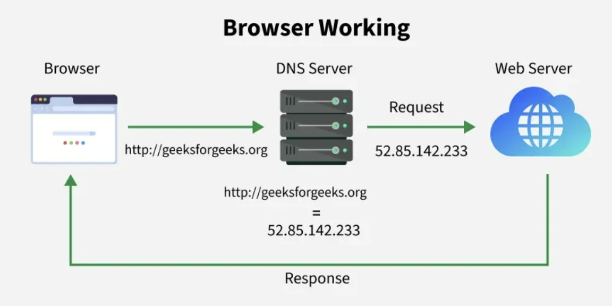

6. Definisi dan Cara Kerja Browser Web
Peramban Web (Web Browser) adalah perangkat lunak aplikasi (seperti Google Chrome, Mozilla Firefox, atau Safari) yang menjadi antarmuka bagi pengguna untuk menjelajahi World Wide Web (WWW).
Cara Kerja Browser:
- Input dan Permintaan IP: User mengetik URL. Browser mengambil Alamat IP dari DNS.
- Akses Server: Browser menggunakan IP untuk menghubungi Server Web (Hosting).
- Penerimaan Data: Server memberikan data konten (HTML, CSS, dan file lainnya).
- Rendering Konten: Browser menggunakan mesin rendering-nya untuk memproses kode dan menampilkan hasil visual yang utuh kepada user.

Alur Kerja Browser